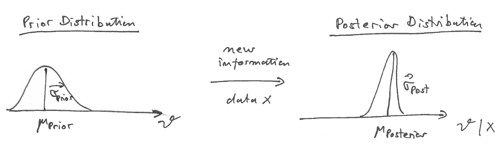
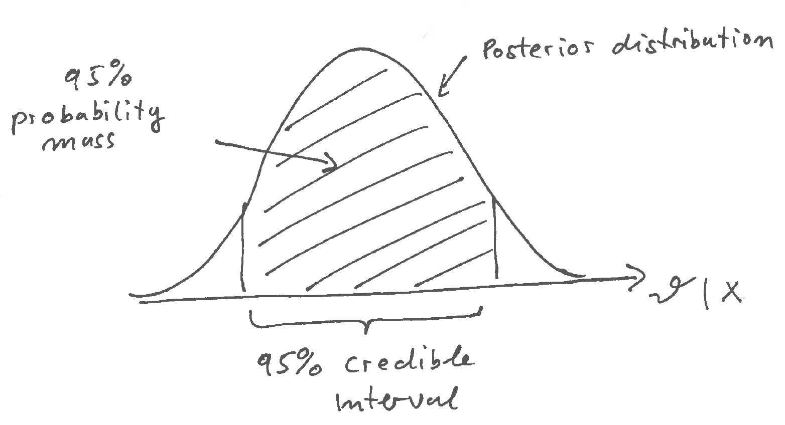

7 Essentials of Bayesian statistics
7.1 Bayes’ theorem
Bayesian statistical learning is linked with the name of Thomas Bayes (1701-1761) who was the first to give Bayes’ theorem (1763) on conditional probability.
\[ \text{Pr}(A | B) = \text{Pr}(B | A) \frac{ \text{Pr}(A) }{ \text{Pr}(B)} \]
This theorem relates the two possible conditional probabilities for two events \(A\) and \(B\).
7.2 Principle of Bayesian learning
Ingredients:
- \(\theta\) parameter of interest, unknown and fixed.
- prior distribution \(\text{Pr}(\theta)\) describing the uncertainty (not randomness!) about \(\theta\)
- data generating process \(\text{Pr}(x | \theta)\) (likelihood!)
Question: new information in the form of new observation \(x\) arrives - how does the uncertainty about \(\theta\) change?
Answer: use Bayes’ theorem to update prior distribution to posterior distribution.
\[ \underbrace{\text{Pr}(\theta | x)}_{\text{posterior} } = \frac{\text{Pr}(x | \theta) }{ \text{Pr}(x)} \underbrace{\text{Pr}(\theta)}_{\text{prior}} \]
Note that this update procedure can be repeated again and again: we can use the posterior as our new prior and then update it with further data.

For the denominator in Bayes formula we need to compute \(\text{Pr}(x)\).
This is obtained by
\[
\begin{split}
\text{Pr}(x) &= \text{E}_{F_{\theta}}\text{Pr}(x | \theta) \\
&= \int \text{Pr}(x | \theta) \text{Pr}(\theta) d\theta \\
&= \int \text{Pr}(x , \theta) d\theta \\
\end{split}
\]
i.e. by marginalisation of the parameter \(\theta\) from the joint
distribution of \(\theta\) and \(x\).
(For discrete \(\theta\) replace the integral by a sum).
Depending on the context this quantity is either called marginal likelihood (of the underlying model) or prior predictive distribution (for the data).
Intringuingly, to conduct a Bayesian statistical analysis typically require integration and/or averaging (e.g. to compute the marginal likelihood), in contrast to maximum likelihood that requires optimisation (to find the maximum likelihood).
7.3 What is exactly is the “Bayesian estimate”?
The Bayesian estimate is the full complete posterior distribution!
However, it is useful to summarise aspects of the posterior distribution:
- Posterior mean \(\text{E}(\theta | x)\)
- Posterior variance \(\text{Var}(\theta | x)\)
- Posterior mode etc.
In particular the mean of the posterior distribution is often taken as a Bayesian point estimate.
The posterior distribution also allows to define credible regions or credible intervals. These are the Bayesian equivalent to confidence intervals and are constructed by finding the areas of highest probability mass (say 95%) in the posterior distribution.

Bayesian credible intervals (unlike their frequentist confidence counterparts) are thus very easy to interpret - they simply correspond to the area in the parameter space in which the we can find the parameter with a given specified probability. In contrast, in frequentist statistics it does not make sense to assign a probability to a parameter value!
Note that there are typically many credible intervals with the given specified coverage \(\alpha\) (say 95%). Therefore, we may need further criteria to constuct these intervals.
In the univariate case a two-sided equal-tail credible interval is obtained by finding the corresponding lower \(1-\alpha/2\) and upper \(\alpha/2\) quantiles.
A highest posterior density (HDP) interval of coverage \(\alpha\) is found by identifying the shortest interval (i.e. with smallest support) for the given \(\alpha\) probability mass. Any point within such an interval has higher density resp. probability than outside the credible interval. When the posterior has multiple peaks this means the the HPD interval may be disjoint.
7.4 Computer implementation of Bayesian learning
As we have seen Bayesian learning is conceptually straightforward:
- Specify prior uncertainty \(\text{Pr}(\theta\)) about the parameters of interest \(\theta\).
- Specify the data generating process for a specified parameter: \(\text{Pr}(x | \theta)\).
- Apply Bayes’ theorem to update prior uncertainty in the light of the new data.
In practise, however, computing the posterior distribution can be computationally very demanding, especially for complex models.
For this reason specialised software packages have been developed for computational Bayesian modelling, for example:
- Stan probabilistic programming language (can be used with R and Python) — https://mc-stan.org/
- PyMC3 and PyMC4 (Python) — https://docs.pymc.io/
- TensorFlow Probability / Edward2 (Python) — https://www.tensorflow.org/probability/
- BUGS for Bayesian analysis — https://www.mrc-bsu.cam.ac.uk/software/bugs/ .
7.5 Bayesian interpretation of probability
7.5.1 What makes you “Bayesian”?
If you use Bayes’ theorem are you therefore automatically a Bayesian? No!!
Bayes’ theorem is a mathematical fact from probability theory. Hence, Bayes’ theorem is valid for everyone, whichever form for statistical learning your are subscribing (such as frequentist ideas, likelihood methods, entropy learning, Bayesian learning).
As we discuss now the key difference between Bayesian and frequentist statistical learning lies in the differences in interpretation of probability, not in the mathematical formalism for probability (which includes Bayes’ theorem).
7.5.2 Mathematics of probability
The mathematics of probability in its modern foundation was developed by Kolmogorov (1933). Essentially, this establishes probability in terms of set theory/ measure theory. This theory provides a coherent mathematical framework to work with probabilities (see module “Foundations of Modern Probability”).
However, Kolmogorov’s theory does not provide an interpretation of probability!
\(\rightarrow\) The Kolmogorov framework is the basis for both the frequentist and the Bayesian interpretation of probability.
7.5.3 Interpretations of probability
Essentially, there are two major commonly used interpretation of probability in statistics - the frequentist interpretation and the Bayesian interpretation.
7.5.3.1 A: Frequentist interpretation
probability = frequency (of an event in a long-running series of identically repeated experiments)
This is the ontological view of probability (i.e. probability “exists” and is identical to something that can be observed.).
It is also a very restrictive view of probability. For example, frequentist probability cannot be used to describe events that occur only a single time. Frequentist probability thus can only be applied asymptotically, for large samples!
7.5.3.2 B: Bayesian probability
“Probability does not exist” (famous quote by Bruno de Finetti, a Bayesian statistician)
What does this mean?
Probability is a description of the state of knowledge and of uncertainty.
Probability is thus an epistemological quantity that is assigned and that changes rather than something that is an inherent property of an object.
Note that this does not require any repeated experiments. The Bayesian interpretation of probability is valid regardless of sample size or the number or repetitions of an experiment.
Hence, the key difference between frequentist and Bayesian approaches is not the use of Bayes’ theorem. Rather it is whether you consider probability as ontological (frequentist) or epistemological entity (Bayesian).
7.6 Historical developments
Thomas Bayes (1701-1761) the father of Bayesian statistics
Only after his death his paper on Bayes’ theorem was published (1763).Laplace (from 1800) was actually the first to use Bayes’ theorem for statistical calculations. This activivity was then called “inverse probability”.
Between 1900 and 1940 classical mathematical statistics was developed and the field was heavily influenced and dominated by R.A. Fisher (who invented likelihood theory and ANOVA, among other things - he also was working in population genetics). Fisher himself was very much opposed to Bayesian theory.
1931 de Finetti publishes his “representation theorem”. This shows that the joint distribution of a sequence of exchangeable events (i.e. where the ordering can be permuted) can be represented by a mixture distribution that can be constructed via Bayes’ theorem. (Note that exchangeability is a weaker condition than i.i.d.) This theorem is often used as a justification Bayesian statistics (along with the socalled Dutch book argument, also by de Finetti).
1933 publication of Kolmogorov’s book on probability theory.
1946 Cox theorem (R. T. Cox): the aim to generalise classical logic (from TRUE/FALSE to continuous measures of uncertainty) inevitably leads to probability theory and Bayesian learning! This justification of Bayesian statistics was later popularised by E.T. Jaynes in various books (1959, 2003).
1955 Stein Paradox - Charles Stein publishes paper on the Stein estimator - an estimator of the mean that dominates ML estimator. His estimator is always better in terms of MSE than the ML estimator, and this was very puzzling at that time!
From 1970 onwards Bayesian learning has become more pervasive!
- Computers allow to do the complex computations needed in Bayesian statistics
- Metropolis-Hastings algorithm published
- A lot of work on interpreting Stein estimators as empirical Bayes estimators (Efron and Morris 1975) and on development of regularised estimation techniques such as penalised likelihood in regression (e.g. ridge regression)
- regularisation originally was only meant to make singular systems/matrices invertible - but then it turned out regularisation has a simple Bayesian interpretation!
- work on reference priors (Bernado 1979)
- penalised likelihood via KL divergence for model selection (Akaike 1973)
Another boost was in the 1990/2000s when in science (e.g. genomics) many complex and high-dimensional data set were becoming widely available. Classical statistical methods cannot be used in this setting (overfitting!) so many new methods were developed for high-dimensional data analysis, many with direct link to Bayesian statistics:
- 1996 lasso regression (Tibshirani)
- Machine learning etc (many Bayesians in this field!)
In short, Bayesian statistics has many favourable properties:
- applicable to small samples (and even to single events!)
- automatically regularises (via the prior) which is important for complex models and when there is the problem of overfitting.
- it provides a coherent generalisation of classical TRUE/FALSE logic
- it is conceptually very simple (but computationally more involved)
- asympotically (large \(n\)) it is consistent and converges to the true model (like ML!).
7.7 Connection with entropy learning
7.7.1 Zero forcing property
It is easy to see that if in Bayes rule the prior probability for an event is set to 0, then the posterior probability for that event will remain at 0, regardless of the data! This zero-forcing property of the Bayes update rule has been called Cromwell’s rule by D. Lindley. Therefore, assigning prior probability 0 to an event should be avoided.
Note that this implies that assigning prior probability 1 to an event should be avoided, too, since this means assigning 0 to all other alternative events.
7.7.2 Connection with entropy learning
The Bayesian update rule is a very general form of learning when the new information arrives in the form of data.
But actually there is an even a more general principle: the principle of minimal information update (e.g. Jaynes 1959, 2003) or principle of minimum information discrimination (MDI) (Kullback 1959):
- Change your beliefs only as much as necessary to be coherent with new evidence!
This is also called entropy learning since the KL divergence (\(F_{\theta | \text{new information}};F_{\theta})\) is employed to measure the divergence from the updated distribution to the distribution prior to the arrival of the information.
Note that this update is based on an \(I\)-projection (see Part I, Likelihood), which also does have the zero forcing property (hinting that Bayes rule is a special case).
Thus, when new information arrives then the uncertainty about the parameter is only minimally adjusted, just as much as needed to account for the new information (“inertia of beliefs”).
There are three main special cases that follow from the entropy learning rule:
- if information arrives in form of data \(\rightarrow\) update by T. Bayes’ theorem (1763)
- if information is in the form of another distribution \(\rightarrow\) update using R. Jeffrey’s rule (1965)
- if the information is in form of constraints \(\rightarrow\) Kullback’s principle of minimum MDI (1959), E. T. Jaynes MaxEnt principle (1957)
Since 1) is by far the most common situation it is clear why it is important to study Bayesian learning!
This shows (again) how fundamentally important KL divergence is in statistics - it not only leads to likelihood inference but also to Bayesian learning, as well as to other forms of information updating! Furthermore, relative entropy is useful to choose priors (e.g. reference priors) and in experimental design.